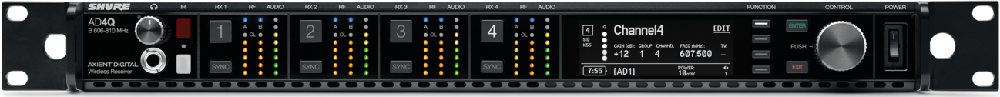
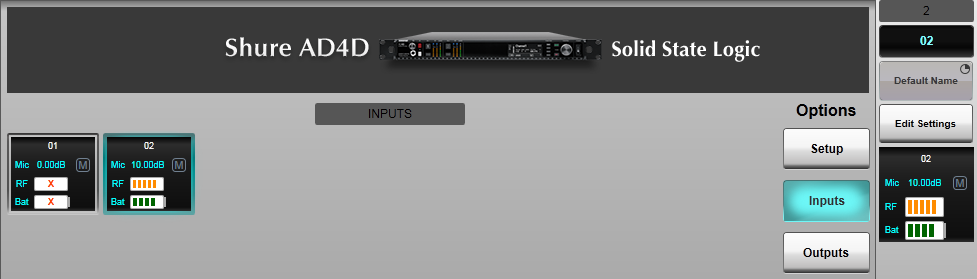
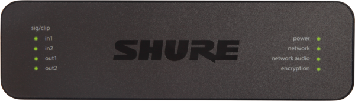

Shure ULX-D & Axient Digital Wireless Mic Control & Monitoring
For instructions on control of Shure ANI22 and ANI4IN audio interfaces please refer to the ANI section below.
Introduction
The Shure ULX-D and Axient Digital ranges of wireless microphones are capable of being remotely controlled from the Live console interface. Battery and RF status is also reported in the console interface. Note that only Dante-enabled ULX-D and Axient Digital products can be controlled by the console; this excludes the ULXD4 receiver.
This is a licensed feature in console software and can be enabled at the SSL factory or in the field. Please contact your local SSL office for further details. If the license is not enabled then Shure wireless devices can be routed using the console interface as with any other Dante device, but cannot be remotely controlled or monitored from the console.

Device IP Addresses
Each Shure Wireless receiver has two IP addresses; one for Dante audio and one for control. The Dante IP address is set in Dante Controller like other Dante audio devices.
The Control IP address can be found in the Shure receiver menu (refer to the relevant Shure user guide for details) or using the Inventory view in the Shure Wireless Workbench application (www.shure.com/en-US/products/software/wwb6).
Wireless Receiver and Console Network Configuration
The Dante Primary network interfaces of the console and Shure wireless receiver(s) must be configured to be in the same subnet. Similarly, the Dante Secondary network interfaces of the console and Shure wireless receiver(s) must be configured to be in the same subnet if used. Please refer to the Dante Setup section and relevant Shure receiver user guide for assistance:
- ULX-D : pubs.shure.com/guide/ULXD-DQ/en-US
- Axient AD4D : pubs.shure.com/guide/AD4D/en-US
- Axient AD4Q : pubs.shure.com/guide/AD4Q/en-US
If the receiver is set to Switched mode then both Shure control and Dante audio data will co-exist on all four of its network ports; any and only one of these ports must be connected to the console's Dante network (the connection will not be redundant).
If the receiver is set to Split/Redundant mode, Shure control and Dante audio will use separate Primary and Secondary ports as labelled on the rear of the unit. Both control and Dante audio ports must be connected for correct operation. Ensure that all ports are connected to the correct Primary/Secondary network ports. Refer to the relevant Shure user guide for guidance.
Networks Using Dante Domain Manager
Note that for networks containing a Dante Domain Manager (DDM) server, the console must be logged into the same domain as the Shure receiver(s) in order to make routes and control them. Refer to the Network Options section for details on configuring the console for DDM-enabled networks.
Configuring the Shure Receiver as a Device on the Console
In order to route and control a Shure wireless mic from the Live console it must first be added to the Configured Devices list in the console's Dante Configuration page (MENU > Setup > I/O > Dante Configuration), either by moving a connected device from the Connected Devices list or by manually creating a new device using the Configure New Device button. Please refer to the Configuring Dante Devices section for further details.
Important: If the Shure wireless receiver(s) have previously been configured as Generic Dante devices prior to V5.0 Live console software, the following steps must be taken to reconfigure them as Shure devices:- Disconnect the Shure wireless receiver(s) from the console
- Reboot the console
- Load the showfile containing the Shure wireless receiver(s) configured as Generic Dante device(s)
- Make a note of any routes made to/from the Shure wireless receiver(s)
- Delete the Shure (Generic Dante) device(s) from the Configured Devices list
- Reconnect the Shure wireless receiver(s) and, once detected as the correct device type by the console, drag & drop them from the Connected Devices list into the Configured Devices list
- Alternatively, do not reconnect the devices and manually add them as offline Shure devices (this may be easier if multiple showfiles need to be amended)
- Remake the routes to/from the device(s)
- Save the showfile
Once configured, the Control Address of the receiver must be entered into the console's Setup page for the unit. This allows the console to communicate with the device. The corresponding LED will turn from red to green when the console has successfully established communications with the device.
Controlling the Shure ULX-D/Axient Digital Wireless Mic
Once configured, the Shure wireless mic inputs can be routed to console Channels in the standard way (refer to the Routing section for further details).
When routed to a console Channel, Input Mute (press & hold) and input Gain parameters of each mic input can be controlled remotely from the console control surface (provided the feature has been correctly licensed). The Gain is adjustable from -18 to +42 dB in 1 dB steps.
Battery and RF Status Monitoring
Battery and RF status information is displayed in the Channel's Input Detail View when routed to a Shure wireless mic input. This information also appears at the top of the channel strip in place of the 48V indicator.
The battery and RF indicators will show X if the receiver is not receiving any data from mic transmitter.
Battery and RF status is also available in the I/O device view (MENU > Setup > I/O > Dante Configuration).
Select the Shure device from the Configured Devices list and press the Inputs button in the lower section of the page. Input channels will be listed here, each showing the mic gain, mute state, battery level and RF power level.

As with other Dante devices, selecting an Input square assigns it to the sidebar for more detailed viewing. Press the Edit Settings button to make parameter changes from here.
Note: Parameters of Shure devices can only be changed when the device is online and connected to the console.Shure ANI22 & ANI4IN Control
For instructions on control and monitoring of Shure ULX-D and Axient Digital wireless microphones please refer to the Shure Wireless Mic section above.
Introduction
The Shure ANI22 is a Dante-enabled 2 x mic-in plus 2 x line-out interface. The Shure ANI4IN is a 4 x mic-in variant. Both are powered by PoE and supplied with either XLR or block audio connectors.

Shure ANI input parameters can be remotely controlled from SSL Live consoles. This is a licensed feature in console software and can be enabled at the SSL factory or in the field. Please contact your local SSL office for further details. If the license is not enabled then Shure ANI devices can be routed using the console interface as with any other Dante device, but cannot be remotely controlled by the console.
Device IP Addresses
Each Shure ANI device has two IP addresses; one for Dante audio and one for control. The Dante IP address is set in Dante Controller like other Dante audio devices.
The Control IP can be found by either using the Shure Web Device Discovery application (www.shure.com/en-US/products/software/shure_web_device_discovery_application), or by looking up by the DNS name. The DNS name takes the structure of "[DeviceName]-[ConnectorType]-[CtrlMacAddress].local", where
- [DeviceName]: ANI22 or ANI4IN
- [ConnectorType]: XLR or BLOCK
- [CtrlMacAddress]: The last half (3 bytes) of the Control MAC address in lower case (the MAC address is written on the underside of the device)
For example, an ANI22 with XLR connectors and a MAC address of 00:0E:CD:40:D6:8A would be "ANI22-XLR-40d68a.local"
Stagebox and Console Network Configuration
The Dante Primary network interfaces of the console and ANI22/ANI4IN interface(s) must be configured to be in the same subnet. Please refer to the Dante Setup section and Shure ANI user guide (pubs.shure.com/guide/ANI22/en-US or pubs.shure.com/guide/ANI4IN/en-US) for assistance.
Note: Ensure that Shure ANI device(s) are connected to the network via a PoE-enabled switch port.Networks Using Dante Domain Manager
Note that for networks containing a Dante Domain Manager (DDM) server, the console must be logged into the same domain as the ANI device(s) in order to make routes and control them. Refer to the Network Options section for details on configuring the console for DDM-enabled networks.
Configuring the ANI22/ANI4IN as a Device on the Console
In order to route and control a Shure ANI device from the Live console it must first be added to the Configured Devices list in the console's Dante Configuration page (MENU > Setup > I/O > Dante Configuration), either by moving a connected device from the Connected Devices list or by manually creating a new device using the Configure New Device button. Please refer to the Configuring Dante Devices section for further details.
Important: If the Shure ANI device(s) have previously been configured as Generic Dante devices prior to V5.0 Live console software, the following steps must be taken to reconfigure them as Shure devices:- Disconnect the Shure ANI device(s) from the console
- Reboot the console
- Load the showfile containing the Shure ANI device(s) configured as Generic Dante device(s)
- Make a note of any routes made to/from the Shure ANI device(s)
- Delete the Shure (Generic Dante) device(s) from the Configured Devices list
- Reconnect the Shure ANI device(s) and, once detected as the correct device type by the console, drag & drop them from the Connected Devices list into the Configured Devices list
- Alternatively, do not reconnect the devices and manually add them as offline Shure devices (this may be easier if multiple showfiles need to be amended)
- Remake the routes to/from the device(s)
- Save the showfile
Once configured, the Control Address of the ANI22/ANI4IN must be entered into the console's Setup page for the unit. This allows the console to communicate with the device. The corresponding LED will turn from red to green when the console has successfully established communications with the device.
Using the Shure ANI22/ANI4IN
Once configured, Shure ANI mic inputs can be routed to console Channels in the standard way (refer to the Routing section for further details). Similarly console outputs can be routed to the ANI22 line outputs.
When routed to a console Channel, +48V phantom power and input Gain parameters of each ANI mic input can be controlled remotely from the console control surface (provided the feature has been correctly licensed). The Gain is adjustable in 3 dB steps. Other parameters of the ANI22/ANI4IN (PEQ, Dante digital gains, output level trims etc.) are not available for control from the console surface but can be accessed through the device's web interface.
Note: Parameters of Shure devices can only be changed when the device is online and connected to the console.